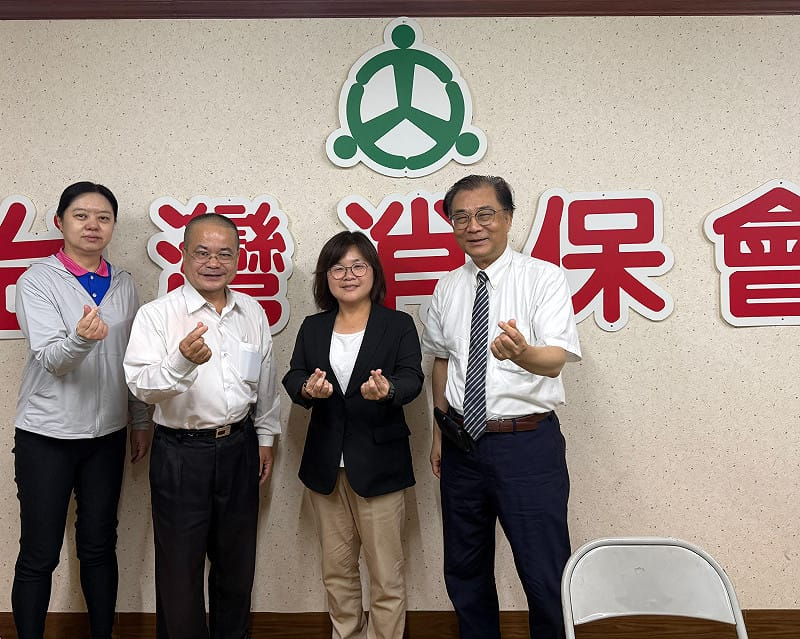

重點說明
消費者購買「毛動力嘟嘟車」後，陸續反映車輛不能合法上路，以及煞車、車體與售後處理等問題。陳慧文接獲陳情後，於2025年11月10日公開提醒市民注意，並要求消保官、經發局、交通局與警察局介入；11月18日陪同消費者召開記者會，將陳情資料交給消保官，要求市府協助釐清銷售資訊及求償途徑。
同年11月25日總質詢，慧文直接請交通局說明這款車的路權。交通局長答覆，該車沒有經過型式認證，當時依法不能上路。慧文要求警方主動調查銷售行為是否涉及詐欺等違法情事，警察局長承諾由刑大迅速辦理，並加強交通宣導與取締。
對於車輛無法使用、仍須繳納分期款的消費者，慧文追問法制局如何協助處理買賣契約與融資問題，並要求消保官協助調解。法制局說明，買賣契約與融資契約須分別處理，也提出消費團體訴訟的協助方向。慧文另要求交通局製作容易理解的購車與路權宣導，並請教育局透過學校提醒家長；兩局均於議場答覆將辦理。
慧文也將訴求提出正式議案：民政第157號案要求法制局協助解除買賣契約及團體訴訟；警消衛環第81號案要求警方調查相關銷售行為。兩案於2026年2月5日經議會決議送請市政府研究辦理，讓消費者的困境持續進入市府處理程序。
2026年6月11日，台灣消費者保護協會公告啟動團體訴訟收件。8月17日，慧文與高雄市消保官辦公室主任殷茂乾拜訪協會理事長麥仁華、副秘書長黃琞傜，確認收件進度並協助提醒消費者備妥資料。協會負責受理與後續法律程序，慧文持續協助聯繫及追蹤。
協會公告的本梯次收件期限為2026年8月31日，以郵戳為憑，現已屆期。已寄件者可向協會確認收件或補件情形；尚未寄件者，應先詢問協會有無後續受理安排。是否已向法院起訴、後續裁判及實際賠償情形，仍待協會或司法機關公布，本案持續追蹤。
針對銷售資訊爭議，業者曾向媒體表示，已提供車輛資訊，並對路權法規提出不同見解。慧文要求相關機關調查並協助消費者維權；是否涉及犯罪、契約責任及求償結果，須由後續調查與司法程序釐清。
{kind=link}

推動歷程
重要進度
接獲陳情，要求跨局處介入
透過公開臉書提醒購車民眾注意路權與產品爭議，要求消保官、經發局、交通局及警察局協助。
陪同消費者召開記者會
公開反映路權、安全與銷售資訊爭議，將陳情資料交給消保官，要求市府協助處理。
總質詢追問偵辦、契約及宣導
要求警方主動調查、法制局協助契約與求償問題，並請交通局及教育局加強民眾與家長的路權宣導。
兩項正式提案交付審查
民政第157號案及警消衛環第81號案，分別追蹤契約與團體訴訟協助、銷售行為調查，交付委員會審查。
議會決議送市府研究辦理
兩案於第4屆第10次臨時會二讀決議送請市政府研究辦理。
台灣消保協會啟動團訟收件
協會公告受理鷹騰毛動力嘟嘟車團體訴訟申請，提供申請文件與辦理說明。
與消保官拜訪協會，確認進度
慧文與殷茂乾主任拜訪協會，確認團體訴訟收件進度，協助提醒消費者於期限前準備資料。
本梯次公告收件期限屆至
協會公告以8月31日郵戳為收件期限。後續收件確認、補件及法律程序，請依協會通知辦理。